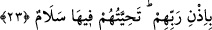

ALLAH GERÇEĞİ VÂDETTİ
21. (Kıyâmet gününde) hepsi Allah’ın huzûruna çıkacak ve zayıflar, büyüklük
taslayanlara: “Biz size tâbi idik, şimdi siz bizden Allah’ın azâbından ufak bir şey
savabilir misiniz?” diyecekler. (Büyüklük taslayanlar): “Allah bizi hidâyete
erdirseydi biz de sizi doğru yola iletirdik. Şimdi sızlansak da sabretsek de birdir.
Çünkü bizim için sığınacak bir yer yoktur.” diyecekler.
22. (Hesapları görülüp) iş bitirilince şeytan diyecek ki: “Şüphesiz Allah size
gerçek olanı vaadetti, ben de size vaat ettim, ama size yalancı çıktım. Zâten benim
size karşı bir gücüm yoktu. Ben, sâdece sizi (inkâra) çağırdım, siz de benim
dâvetime hemen koştunuz. O halde beni yermeyin, kendinizi yerin. Ne ben sizi
kurtarabilirim, ne de siz beni kurtarabilirsiniz. Şüphesiz daha önce ben, beni
(Allah’a) ortak koşmanızı reddettim.” Şüphesiz zâlimler için elem verici bir azab
vardır.
23. İman edip de iyi işler yapanlar, Rablerinin izniyle içinde ebedî kalacakları,
zemininden ırmaklar akan cennetlere sokulacaklardır. Orada (birbirleriyle)
karşılaştıkça söyledikleri “selam”dır.
Kıyâmet gününde “hepsi” -Kâşifî Tefsîri’nde belirtildiği üzere- mü’min ve
kâfirlerden olan bütün ölüler, “Allah’ın huzûruna çıkacak” ya da önder olsun tâbi
olsun bütün ölüler, haşr ve hesab için bir araya toplanacaktır. Nitekim Allah Teâlâ: